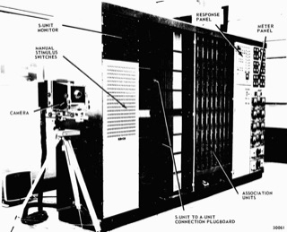

Artificial Intelligence
Artificial intelligence sounds like magic until you see it as a function:
something goes in (x), something comes out (Y), and the part in between
(F) was not written line by line but learned from data. This chapter
says what AI is and is not, where it is used (including at HCMUT), and then opens the box with a
tiny example: a straight line that learns house prices. You will see the difference between
training and inference with your own eyes.
From rules to learning: what AI is, and how it learns
11.1What is AI — and what it is not
Artificial intelligence is the field of building computer systems that perform tasks we normally take as signs of intelligence: seeing and understanding the world, recognising speech, understanding language, learning from experience, reasoning, making decisions, and acting. The usual starting point is the Dartmouth workshop of 1956, whose proposal was written by John McCarthy, Marvin Minsky, Nathaniel Rochester and Claude Shannon. The slides put it as “giving machines human capabilities”.
Two warnings from the textbook. First, AI is not a copy of the human brain: it is a collection of computing methods, and a system that is superb at reading licence plates may understand nothing else. Second, there is no single agreed definition; think of AI as a general-purpose technology, like electricity.
Why does AI exist at all? Because you already know what classical programs are good at: following clear
instructions. if (temperature < 18) heaterOn(); works perfectly. But try writing the rules that tell a dog from
a cat in any photo, or that capture what a vague sentence means. Every rule you write has exceptions
(a tiny dog, a cat with no visible whiskers, a blurry shot). That gap, tasks that are easy for people and
impossible to spell out as rules, is the AI problem. It is also why “doing arithmetic very fast” does not count as
intelligence: a calculator just runs one procedure someone wrote.
… every aspect of learning or any other feature of intelligence can in principle be so precisely described …
11.2Six abilities of intelligence — and the size of the impact
If we ask what special abilities humans actually have, the textbook (and the slides) list six. Today's AI is uneven across them:
| Ability | What it means | Where AI stands |
|---|---|---|
| Reasoning | Representing knowledge and deducing new facts from it: “all students submit before the deadline; An is a student, so An submits before the deadline”. | The weakest; long, consistent, checkable reasoning is the main research frontier. |
| Learning | Acquiring skills from experience, a lifelong process for people. | The key switch from ordinary programs to modern AI (see 11.6). |
| Vision | Seeing and understanding the physical world, not only capturing light. | Very strong, but can fail on noisy, rare or unfamiliar images. |
| Action | Robots, movement, physical coordination, driving. | Progressing, but the real world adds friction, delay, noisy sensors and surprises. |
| Language | Understanding documents, summarising, writing; hard because of ambiguity and context. | Very strong at fluent text; fluent is not always correct (hallucination). |
| Communication | Speech recognition, speaking, keeping a conversation going. | Strong; understanding intent and tone is still harder than transcription. |
The slides also draw the chain data → information → knowledge → intelligence; we meet it again in 11.5. The slides say reasoning from knowledge is the weakest ability, the one the research community is chasing hardest. (The slide also gives language and vision “8–9 out of 10”: that is an informal impression, not a measured score, so we do not repeat it as a number.)
Impact. AI could raise productivity, changes a large share of work tasks, and raises questions about inequality and new skills. Everyone is not equally ready: many people still lack internet access or digital skills, so the benefits are not shared automatically. The textbook cites an IMF analysis showing that richer economies have more jobs exposed to AI, but exposed does not mean replaced.
11.3Where AI is used — from X-rays to Ba Na speech
A common beginner mistake is to think AI means chatbots. The textbook groups applications by the kind of data:
| Area | Typical task | Why it is hard |
|---|---|---|
| Computer vision | Classification (what is in the picture?), object detection (what and where: a bounding box), segmentation (a label for every pixel) | An image is just millions of numbers; light, angle, blur and occlusion all change them. |
| Natural language | Machine translation, summarising, sentiment analysis, question answering | Ambiguity (“I shot an elephant in my pajamas”), sarcasm, slang, context. |
| Generative AI | Creating text, images, audio, code from a prompt (11.4) | Output can be fluent and wrong. |
| Robots and action | Driving, walking, grasping | Friction, delay, noisy sensors, safety. |
| Speech, signals, time series | Denoising speech, ECG/EEG, predicting battery life | Patterns unfold over time, and noise changes constantly. |
| Edge AI | Running a model on a small device such as a camera | Little memory, power and speed; the model must be small yet accurate. |
At home: the URA Lab at HCMUT
The lecture slides, by Assoc. Prof. Quan Thanh Tho, tour the work of the URA Lab (“Unlimited Research Group of AI”) at the Faculty of Computer Science and Engineering, HCMUT. Each example is a nice x → Y story:
| Project | Input x → output Y | The point |
|---|---|---|
| HCMUT admissions chatbot (Vietnamese LLM, URA-LLaMa-2.1 8B) | A question about admissions → an answer built from admissions information | Time-sensitive answers must point to the official notice, and unsure questions should go to a human adviser. |
| Machine translation and speech synthesis for the Ba Na language (a state-level science project) | Text ↔ text; text → natural speech | Little data is the problem, so experts and native speakers must be in the loop; also language preservation. |
| Explainable knee-osteoarthritis diagnosis | A knee X-ray → a severity grade plus highlighted bone abnormalities | An explanation lets a doctor check the AI; the AI assists, the doctor decides. |
| Plant-leaf disease classification | A photo of a leaf → a disease class | Outdoor light, overlapping leaves and unrepresentative training photos. |
| Virtual try-on with Stable Diffusion | Person image + clothing → a new, realistic image | Generative AI in commerce (shown to the Prime Minister at VNU's 30th anniversary, as the slides report). |
| Smart retail | Camera frames → detected and counted products | Object detection in a warehouse; computer vision outside the lab. |
| Speech and signals | Noisy audio → clean speech; battery history → remaining capacity; EEG/ECG → predicted action or state | Not everything is images or text. |
| Edge AI on RISC-V | Camera frames → detections on the device (YOLOv5) | Lower delay and bandwidth; raw video can stay on the device. |
11.4Generative AI and four milestones
A spam filter answers “is this email spam?”. A generative model writes a new email, draws a picture or produces code from a prompt (the request you type). The distinction is the kind of output (a decision about existing data versus new content), not a hard line between model designs. Four milestones from the slides, with dates we checked:
| When | Milestone | Why it mattered |
|---|---|---|
| 2012 | AlexNet (Krizhevsky, Sutskever, Hinton), a convolutional neural network, wins the ImageNet image-recognition challenge | Top-5 error 15.3%, more than 10.8 percentage points better than the runner-up: deep learning took over computer vision. |
| 2017 | Transformer (“Attention Is All You Need”, Vaswani et al., on arXiv in June 2017) | Attention lets a model weigh every other word in the context; one architecture then served text, images and more. |
| 30 Nov 2022 | ChatGPT released to the public | Millions of ordinary people could talk to an AI in plain language; generative AI went mainstream. |
| 20 Jan 2025 | DeepSeek-R1 released | Strong reasoning models at a lower cost than many earlier large models: AI is getting cheaper and easier to deploy. |
Underneath, a large language model works by predicting the most likely next piece of text given the context, which is why it can sound right without being right: that is hallucination. (For the textbook: GPT is mainly used to generate text; BERT mainly to understand it, e.g. classify or extract.) Chapter 12 goes deeper into LLMs and their security.
11.5AI as a function: Y = F(x), training and inference
The most useful sentence in the chapter: AI is a function. x is the input (an image, a sentence, a
signal), F is the model, and Y is the output (a prediction, a recommendation, new content, an action).
If you have written int square(int n) in Chapter 6, you already know what a function is; the new thing is that
here nobody writes the body of F by hand. Its parameters (numbers inside the model) are
learned from examples. That gives the two phases the syllabus asks for:
| Training | Inference | |
|---|---|---|
| What happens | Show examples, measure the error, adjust the parameters, repeat | Give the finished model a new x and read off Y |
| Parameters | Change | Frozen |
| Needs | Lots of data, an error measure, lots of computing (GPUs for big models) | The model and the input, one pass |
| Cost and frequency | Expensive, done now and then (and again when the model needs updating) | Cheap, done every time someone uses it |
| Example | Fitting a spam filter on 100,000 labelled emails | Classifying the email that just arrived |
From data to intelligence. The textbook separates four words people mix up. Data is raw observation (pixels, sensor readings, characters). Information is data organised to answer a question (today's average temperature). Knowledge links information with context and rules (a sudden rise can mean a fault). Intelligence uses knowledge to reason, decide and act. Modern systems are very good at the first steps, spotting patterns in data, and still struggle with reliable knowledge and reasoning. Y = F(x) is also not magic: it is a computed mapping, and the hard part is making F generalise to new inputs and not produce dangerous or biased answers.
11.6From rules to learning — a rule-based program versus a learned one
Machine learning (ML) means the computer learns from data instead of only following rules a person wrote. Here is the contrast in the language you know. The rule-based spam filter is pure Chapter 3: a human chooses every threshold. The learned filter has the same shape (a function from two numbers to a yes/no) but the numbers inside it come from training on labelled emails, such as the ones in Panel 2 of the lab:
bool spamByRules(int links, int capsWords) { if (links > 5) return true; if (capsWords > 6) return true; if (links > 3 && capsWords > 3) return true; return false; } // spammers adapt: now someone must rewrite the rules
bool spamByModel(double links, double caps) { double w1 = 10.14, w2 = 11.07, b = -11.00; // learned return w1 * links / 10 + w2 * caps / 10 + b >= 0; } // retrain on new data: new w1, w2, b — same code
Try the email with 5 links and 4 capital words: the hand-written rules say spam (the third rule fires); the learned weights (these are what logistic regression finds after 600 training steps on the lab's data) say not spam, because they learned that both numbers must be high. Neither is “the truth”; each is only as good as the data or the rules behind it. The learned program must also generalise: do well on new emails, not just remember the training ones.
Three (plus two) ways to learn:
| Kind | Data | Goal | Example |
|---|---|---|---|
| Supervised | Labelled: each example has the right answer | Predict the label for new inputs | Spam or not; house price; dog or cat |
| Unsupervised | No labels | Find structure in the data | Grouping shoppers into regulars, bargain hunters, big spenders |
| Reinforcement | Rewards and penalties from acting | Learn a strategy by trial and error | A game-playing AI; a robot learning to walk |
| Semi-supervised | A little labelled, a lot unlabelled | Cut the cost of labelling | Medical images |
| Self-supervised | Labels made from the data itself | Learn from huge unlabelled data | Hide a word, predict it: how BERT and GPT are pre-trained |
Features and models. A model never sees the world, only a representation of it. In traditional ML people design the features (links, ALL-CAPS words, email length, sender domain). In deep learning the model learns its own features from raw data: edges first, then parts, then whole objects. Deep models are powerful for images, audio and language, but harder to explain, because their internal features do not always match concepts people understand.
11.7Training versus inference with a line — house prices
The textbook's example: Mr X wants to buy a 140 m² house and has five recent sales (size in m², price in thousand $).
The more data points are bigger houses with higher prices, so he guesses a straight line y = a·x + b: here F is the line and
a, b are its two parameters. “Learning” means choosing them well.
| x (m²) | actual y | line y = 3x + 3 | error = actual − predicted |
|---|---|---|---|
| 90 | 280 | 273 | 7 |
| 100 | 295 | 303 | −8 |
| 110 | 340 | 333 | 7 |
| 120 | 350 | 363 | −13 |
| 130 | 400 | 393 | 7 |
The initial guess y = 3x + 3 came from the slope between the first and last house, (400 − 280)/(130 − 90) = 3, and the intercept that makes the line pass
through the average point (110, 333). It misses every house a little (Table 4.2 of the textbook; the 120 m² house sold for 350 but the line says 363).
To score a line, square each error (so + and − cannot cancel, and big misses count more) and add:
L = 7² + (−8)² + 7² + (−13)² + 7² = 380. This loss is the number training wants to make small.
Training by gradient descent. Ask: if I nudge a up a little, does L go up or down? That slope is the gradient.
At (a, b) = (3, 3) the textbook finds dL/da = 100 (positive: increasing a makes things worse) and dL/db = 0. So move a against the gradient with a small step
(the learning rate η = 0.00001): a ← 3 − 0.00001·100 = 2.999, b unchanged. Repeat. Here is exactly that loop in C++ (your Chapter 4 loops, plus a little calculus):
double x[5] = {90, 100, 110, 120, 130}; // size in m2 double y[5] = {280, 295, 340, 350, 400}; // price in thousand $ double a = 3, b = 3; // the parameters: start at y = 3x + 3 double eta = 0.00001; // learning rate for (int step = 1; step <= 5; step++) { // TRAINING double da = 0, db = 0, loss = 0; for (int i = 0; i < 5; i++) { double err = y[i] - (a * x[i] + b); // actual - predicted loss += err * err; da += -2 * x[i] * err; // dL/da db += -2 * err; // dL/db } cout << "step " << step << ": a=" << a << " b=" << b << " L=" << loss << endl; a -= eta * da; // move against the gradient b -= eta * db; } cout << a * 140 + b << endl; // INFERENCE: parameters frozen, new x = 140
Run (with fixed and setprecision(5)) it prints L = 380, 379.9615, 379.95945, … and the final line gives about 422.9 for the 140 m² house: after five tiny steps the line has barely moved, exactly
as in the textbook's Table 4.3. Real training runs thousands or millions of steps. The exact best line for these five houses, from a formula, is a = 2.95, b = 8.5 with L = 377.5, which predicts 421.5 thousand $
(about $421,500). That last step, plugging in 140 without changing anything, is inference.
Two more lessons from the textbook's exercise. (1) Add data, retrain: two more sales (95 m² for 300 and 125 m² for 360) change the best line to roughly y = 2.66x + 40.1 and the 140 m² prediction to about 411.8. A model is only as current as its data. (2) Choose the right shape:
for the invented ultra-luxury villas (200 m² for $11.6 M up to 1,800 m² for $320.6 M) a straight line has big systematic errors, while a quadratic y = ax² + bx + c (three parameters, same training idea) follows the curve. Exercise 6 checks the textbook's villa example, and finds an error in it. Panel 1 of the lab below has both datasets.
11.8Data is the fuel — and biased data bends the model
Data lets algorithms find patterns, and the explosion of data (messages, photos, sensors, phones, cars, factories) is a big reason modern AI took off. But good data is not just a lot of data: it must be correct, representative, diverse and relevant to the goal. A million wrongly labelled photos can teach a worse model than ten thousand carefully labelled ones; a leaf-disease model trained on a few dozen lab photos may fail in a muddy field. The textbook describes big data by four Vs:
| V | Meaning | AI angle |
|---|---|---|
| Volume | How much data | More examples help, if they are good. |
| Velocity | How fast it arrives and must be processed | Streaming sensors, live traffic. |
| Variety | Text, images, video, audio, signals | Models must cope with many forms. |
| Veracity | How trustworthy and representative it is | Large but wrong or skewed data gives a wrong or skewed model. |
Biased data, biased model. A model learns the patterns it is shown, including social bias. And removing the obvious column does not fix it: other features can act as proxies for it (school names, activities, wording, career gaps may correlate with gender, region or income). The same worry applies to education: a model that predicts student ability from past data can disadvantage students from under-resourced schools, students who work part-time, or those with poor internet. Panel 2 of the lab lets you watch this: switch on a skewed sample and watch the boundary bend so that legitimate newsletters get blocked.

11.9AI, ML, DL — and using AI responsibly
These three words are not synonyms; they are nested. AI is the broad goal of machines showing intelligent behaviour, built by rules, search, logic, probability, learning, or a mix. Machine learning is the way of building AI from data. Deep learning is machine learning with many-layered neural networks. So not every AI system learns (a chess program that searches moves, or an expert system with hand-written rules, is AI but not ML), and not every ML model is deep. A plain thermostat that follows “if below the threshold, heat” is a reflex agent but usually too simple to call AI today.
An artificial “neuron” is a big simplification of a biological one: it multiplies inputs by weights, adds them up, passes the sum through an activation function and hands the result on. Deep learning is not a copy of the brain; it needs lots of data and computing, and is hard to explain. AI is also classified by ability: narrow AI (good at specific tasks, all that exists today), AGI (any human-level intellectual task: not achieved), and ASI (hypothetical, beyond humans); and by function: expert systems, predictive AI, generative AI.
Using AI in your own studies. The textbook's rule: AI can be an assistant, never the person responsible. Good uses: ask it to explain a concept at several levels, then check the answer against the book, rewrite it in your own words, and ask “what is the weakness in that answer?” or “give a counter-example”; generate review questions; compare concepts; find holes in your argument. Poor uses: letting it read for you, do the assignment for you, or giving you answers you do not understand. A fluent answer that is wrong in substance is more dangerous than an awkward one you verified.
| Risk | What it looks like | A sensible habit |
|---|---|---|
| Privacy | Face recognition in public places without consent; voice assistants recording more than you think | Ask who can access the data, where it is stored, and for what purpose. |
| Bias and fairness | Crime-prediction or hiring tools reproducing past inequality | Check results by group; do not assume a model is objective. |
| Misinformation | Hallucinated answers that sound certain | Verify important claims with real sources. |
| Copyright | Models trained on web content; outputs that closely resemble protected work | Cite and respect licences (see Chapter 13). |
| Jobs | Routine tasks automated, new jobs in data and AI governance | Learn the skills that change fastest. |
| Attention | Recommenders that only maximise time on the app | Notice what a system is optimising. |
Chapter 12 returns to security and misuse of language models; Chapter 13 covers citation and what “responsible use” means for your assignments.
Learn the Function — train a model, then use it
Two toy models you can steer. Panel 1 fits a line to house prices by hand and by gradient descent (training), then predicts a new house with the frozen line (inference). Panel 2 trains a two-feature spam classifier whose decision boundary moves as it learns, and shows what a biased sample does to it. Everything is deterministic and runs in your browser.
Chapter 11 quiz
28 questions: definitions, x/F/Y and training-versus-inference scenarios, learning types, a little regression arithmetic, and bias and responsible use.
Exercises
Six tasks: some on paper (including the textbook's house and villa examples), three in the lab. Lab tasks give the settings and the numbers you should see.
AI project canvas: a campus problem, on one page
Teams of 3–4 · one class period to prepare · a 5-minute presentation. Counts toward the class-activities 10%.
The task
Pick one real problem on campus that an AI function Y = F(x) could help with (examples: predicting which library
study rooms will be full, sorting student-service emails, spotting broken lab equipment from photos, helping new students find information,
estimating bus waiting time). Fill in the AI project canvas below on one page and present it in five minutes. You are not building anything:
you are showing that you can think about an AI system the way an engineer does.
| Canvas box | Your team writes |
|---|---|
| 1. The problem and the user | Who is helped, and what decision or task gets easier? |
| 2. Input x and output Y | Exactly what goes in (text, image, numbers?) and what comes out (a label, a number, text, an action?) |
| 3. Rules or learning? | Could a rule-based C++ program do it? If not, why not? Which kind of learning (supervised, unsupervised, reinforcement)? |
| 4. Data | Where does the training data come from, who labels it, and how many examples? Is it representative of all users? Any privacy concern? |
| 5. Training versus inference | What would you train on, how often would you retrain, and what happens at inference time (on a server or on the device)? |
| 6. What could go wrong | Bias and proxy features, hallucination or wrong answers, privacy, misuse. Name at least one for each of two groups of users. |
| 7. Success and human in the loop | How will you measure success (and for which groups)? When must a human check or decide, and how can a user appeal? |
Constraints
- One page and five minutes: choose; do not list everything.
- Boxes 2 and 4 must be concrete. “Student data” is not an answer; “each row = one booking: room, hour, weekday, exam week yes/no” is.
- You must propose one measurable success target (for example “at least 90% of predicted-full rooms really are full”) and say how you would check it on data the model never trained on (generalisation).
- You must include one place where a person overrules the AI.
Roles
| Role | Responsibility |
|---|---|
| Problem owner | Defines the user, x and Y; keeps the project small and concrete |
| Data lead | Owns box 4: sources, labels, representativeness, privacy |
| Risk auditor | Owns box 6: asks “who loses if this is wrong or biased?” |
| Presenter | Tells the story in five minutes, from input to human oversight |
Further reading
Google ML Crash Course — Linear regression
The same line, loss and gradient-descent story as 11.7, with interactive exercises.
Video3Blue1Brown — Gradient descent, how neural networks learn
The picture behind “move the parameters against the gradient”, scaled up to a real network.
TutorialGoogle ML Crash Course — Generalization
Why doing well on training data is not enough, and how to test on data the model has not seen.
HistoryWikipedia — Dartmouth workshop
The 1956 summer project that named the field: who proposed it, what they hoped, and what came next.
PaperAttention Is All You Need (2017)
The Transformer paper from 11.4. The abstract and introduction are readable even as a first-year student.
True storyReuters (via CNBC) — Amazon scraps a secret AI recruiting tool
How a model trained on ten years of resumes learned the bias in them.
ReportMcKinsey — The economic potential of generative AI
The real source of slide 16's “$2.6–4.4 trillion”: read what it actually claims, and its assumptions.
Paper“GPTs are GPTs” — labour-market impact of LLMs
Where the “80% of the workforce” statistic comes from (the U.S. workforce, 10% of tasks affected).